O mundo dos carros possui modelos que vão muito além de simples meios de transporte. Alguns veículos marcaram época por sua engenharia,velocidade, design e inovação, se tornando verdadeiras lendas automotivas.
Desde clássicos como o Lamborghini Miura até hipercarros modernos como o Mercedes-AMG One, muitos desses carros mudaram a indústria automotiva e continuam sendo admirados por entusiastas até hoje.
O Ford GT40 foi um carro de corrida americano de resistência de alto desempenho da Ford Motor Company, criado por ordens de Henry Ford II para correr nas 24 Horas de Le Mans e destruir o reinado da Ferrari. Isso porque Enzo Ferrari desistiu da venda de sua empresa à Ford na última hora e então, para Henry Ford II era questão de honra bater a Ferrari em seu território de domínio. E conseguiu com louvor.
Foi quatro vezes vencedor das 24 Horas de Le Mans, entre 1966 e 1969.
Não só isso, pois ao destronar o domínio da Ferrari, foi a primeira
empresa
americana a vencer a corrida e, de forma invicta, pois venceu
todas as vezes em que participou. Após sua sequência de vitórias em Le Mans
recebeu o apelido de "matador de Ferraris"!
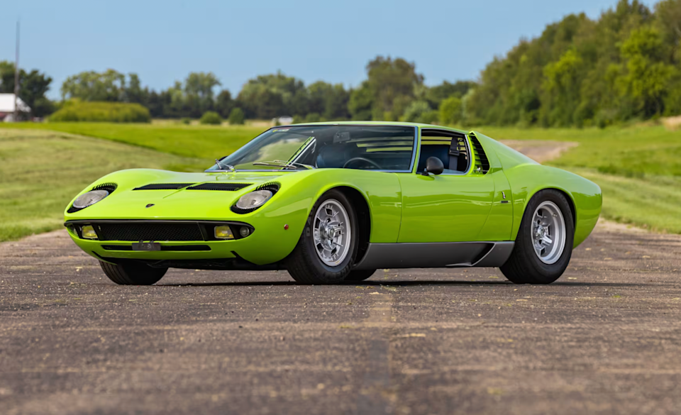
O Lamborghini Miura é considerado por muitos o "Pai" e o primeiros dos supercarro da história. Lançado na década de 1960, o modelo revolucionou o mundo automotivo com seu motor V12 central-traseiro e seu design extremamente inovador para a época.
Além de sua velocidade e desempenho impressionantes, o Miura ficou conhecido por seu visual elegante e agressivo, idealizado por Marcello Gandini, influenciando diversos supercarros que surgiram nas décadas seguintes. Até hoje, ele é visto como uma das maiores lendas da Lamborghini.
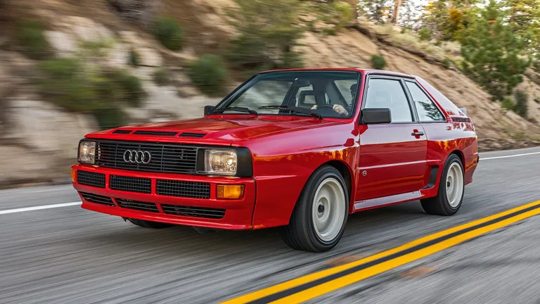
O Audi Quattro foi um dos carros mais revolucionários da história
do automobilismo e da indústria automotiva. Lançado em 1980, o modelo
ficou mundialmente conhecido por introduzir e popularizar a tração
integral AWD em carros de alto desempenho, algo extremamente inovador
para a época.
Em um período onde sistemas de tração integral ainda eram considerados
pesados, problemáticos e pouco eficientes para performance, o Audi Quattro
conseguiu trazer uma tração integral realmente funcional e competitiva.
Equipado com um motor turbo de cinco cilindros e um avançado sistema AWD,
o carro entregava enorme estabilidade e aderência em praticamente qualquer
tipo de terreno.
O Quattro dominou competições de rally durante os anos 80, principalmente no lendário Grupo B do WRC. Seu desempenho em pistas de terra, neve e chuva mudou completamente a forma como os carros de rally eram desenvolvidos.
Muitos entusiastas e especialistas consideram o Audi Quattro o maior e mais importante carro de rally de todos os tempos, justamente por revolucionar o esporte com sua tração integral. Após o sucesso do Quattro, praticamente todas as equipes passaram a utilizar sistemas AWD em carros de rally e em diversos esportivos de alta performance.
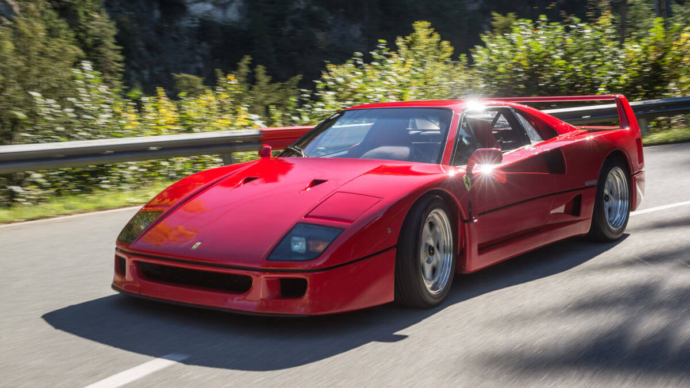
A Ferrari F40 é considerada um dos carros mais icônicos e importantes
da história da Ferrari. Lançada em 1987 para comemorar os 40 anos da
fabricante italiana, ela rapidamente se tornou símbolo de velocidade,
desempenho e engenharia extrema.
Seu design foi desenvolvido pela famosa Pininfarina, estúdio responsável
por criar algumas das Ferraris mais lendárias já produzidas, como a
Ferrari Testarossa, Ferrari Enzo e Ferrari 250 GT. Com linhas agressivas,
grande aerodinâmica e construção em materiais leves como fibra de carbono,
a F40 foi criada praticamente sem luxos, focando totalmente na experiência
de condução e no desempenho.
Equipada com um motor V8 biturbo, a Ferrari F40 ultrapassava os 320 km/h, se tornando um dos carros mais rápidos do mundo em sua época. Além disso, ela ficou marcada por ser o último carro aprovado pessoalmente por Enzo Ferrari (criador e fundador da Ferrari Automobile) antes de sua morte, tornando o modelo ainda mais especial para os fãs da marca.
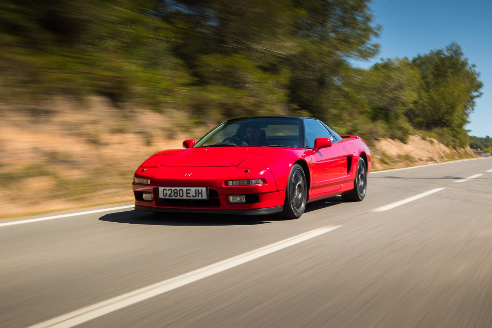
O Honda NSX foi um dos carros mais revolucionários da indústria automotiva
japonesa. Lançado em 1990, o modelo chamou atenção por unir desempenho
de supercarro com confiabilidade e facilidade de uso, algo muito raro
entre os esportivos da época.
O NSX também entrou para a história por ser o primeiro carro de produção
em massa com carroceria totalmente construída em alumínio, algo extremamente
avançado para o período. Essa tecnologia ajudava na redução de peso e
melhorava o desempenho e a dirigibilidade do veículo.
Desenvolvido com foco em leveza, equilíbrio e dirigibilidade, o NSX
utilizava motor V6 com tecnologia VTEC, entregando alta rotação e excelente
resposta. O modelo também ficou conhecido por oferecer uma experiência
de condução muito mais refinada e confortável do que diversos supercarros
europeus.
O desenvolvimento do NSX contou com participação do lendário piloto
Ayrton Senna, que ajudou a ajustar a suspensão e o comportamento do carro
durante testes realizados em pistas como Suzuka e Nürburgring. Sua influência
ajudou a transformar o NSX em um dos esportivos mais equilibrados e respeitados
de sua geração.
Além de revolucionar os esportivos japoneses, o Honda NSX obrigou diversas fabricantes europeias a melhorarem a confiabilidade e a dirigibilidade de seus próprios supercarros. Até hoje, ele é considerado um dos maiores ícones da engenharia automotiva japonesa.
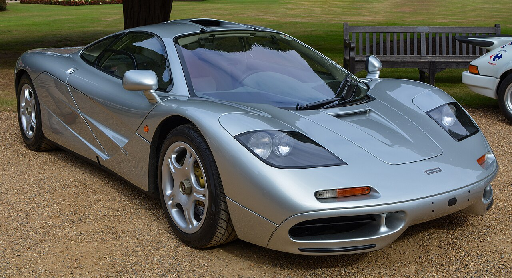
O McLaren F1 é considerado por muitos um dos maiores e mais importantes supercarros já produzidos. Lançado em 1992, o modelo revolucionou o mundo automotivo ao combinar engenharia extrema, leveza e desempenho em um nível nunca visto anteriormente.
Projetado pelo lendário engenheiro Gordon Murray, o McLaren F1 foi criado
com foco total na experiência de condução. O carro utilizava uma estrutura
de fibra de carbono extremamente avançada para a época, além de um motor
V12 aspirado desenvolvido pela BMW, conhecido por sua potência e confiabilidade.
Um dos detalhes mais marcantes do McLaren F1 era sua posição de direção
central, colocando o motorista exatamente no meio do carro, algo inspirado
em carros de corrida. O modelo também possuía compartimento do motor revestido
em ouro, material utilizado para ajudar na dissipação do calor gerado pelo V12.
Em 1998, o McLaren F1 se tornou o carro de produção mais rápido do mundo, atingindo aproximadamente 386 km/h, recorde que permaneceu por vários anos. Até hoje, ele é considerado um dos carros mais lendários e respeitados da história automotiva.
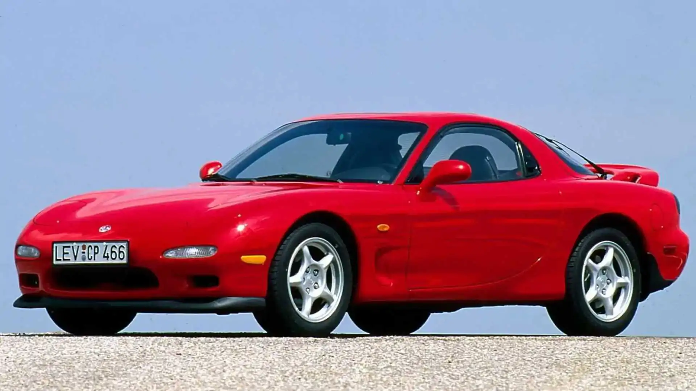
O Mazda RX-7 FD é um dos carros japoneses mais lendários e admirados da história automotiva. Lançado em 1992, o modelo ficou conhecido por seu design elegante, excelente equilíbrio e principalmente pelo uso do famoso motor rotativo da Mazda.
Equipado com o motor 13B-REW, o RX-7 FD foi o primeiro carro japonês
de produção em massa a utilizar um sistema biturbo sequencial. Seu motor
rotativo possuía funcionamento extremamente diferente dos motores comuns
a pistão, entregando alta rotação, resposta rápida e um som muito característico.
Graças ao seu baixo peso, ótima distribuição de massa e excelente
dirigibilidade, o RX-7 se tornou extremamente popular entre entusiastas,
pilotos de drift e preparadores ao redor do mundo. O carro também ganhou
enorme destaque na cultura automotiva através de filmes, jogos e competições.
Até hoje, o Mazda RX-7 FD é considerado um dos maiores ícones da cultura JDM, além de ser um dos esportivos japoneses mais respeitados e desejados já produzidos.
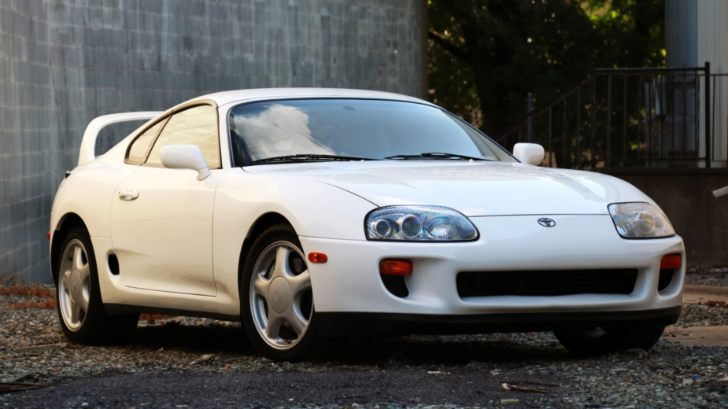
O Toyota Supra MK4 é um dos carros japoneses mais famosos e influentes da história automotiva. Lançado em 1993, o modelo ficou conhecido mundialmente por seu enorme potencial de preparação, desempenho e resistência mecânica.
Embora seja talvez um dos carros mais simples desta lista quando comparado
a hipercarros extremamente avançados, o Supra conquistou uma fama gigantesca
justamente por causa de seu lendário motor 2JZ-GTE. O seis cilindros biturbo
da Toyota ficou conhecido pela enorme resistência interna, sendo capaz de
suportar números absurdos de potência com poucas modificações.
Com troca de componentes como turbinas, sistema de combustível e preparação
interna, muitos Supras preparados ultrapassam facilmente os 1000 cavalos,
algo que ajudou o carro a se tornar uma verdadeira lenda no mundo tuner.
Sua confiabilidade e capacidade de preparação fizeram do modelo um dos
maiores ícones da cultura JDM.
Além de seu desempenho impressionante, o Supra MK4 também marcou gerações por seu visual agressivo e por sua presença em filmes, jogos e competições automobilísticas. O modelo ganhou ainda mais popularidade após aparecer na franquia Velozes e Furiosos, se tornando um símbolo da cultura automotiva dos anos 2000.
Até hoje, o Toyota Supra MK4 é considerado um dos esportivos japoneses mais lendários já produzidos, sendo extremamente valorizado e admirado por entusiastas no mundo inteiro.
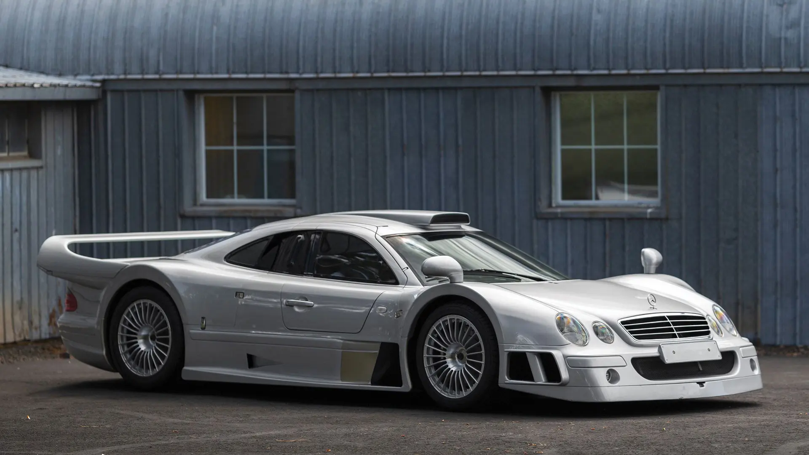
O Mercedes-Benz CLK GTR é considerado um dos carros mais extremos e exclusivos já produzidos para as ruas. Lançado em 1997, o modelo nasceu praticamente como um carro de corrida adaptado para uso urbano, criado para atender às regras de homologação da categoria FIA GT.
Diferente de muitos supercarros tradicionais, o CLK GTR foi desenvolvido
primeiro para as pistas e apenas depois transformado em carro de rua.
Sua engenharia era extremamente avançada para a época, utilizando chassi
de fibra de carbono, aerodinâmica inspirada no automobilismo e um enorme
motor V12 montado na posição central-traseira.
O carro ficou conhecido por sua aparência agressiva, desempenho absurdo
e produção extremamente limitada, com poucas unidades fabricadas.
Seu interior também chamava atenção por misturar luxo da Mercedes-Benz
com características quase totalmente vindas de carros de competição.
Muitos entusiastas consideram o CLK GTR um dos carros mais próximos de um verdadeiro carro de corrida legalizado para as ruas. Até hoje, ele permanece como uma das maiores lendas da engenharia automotiva dos anos 90.
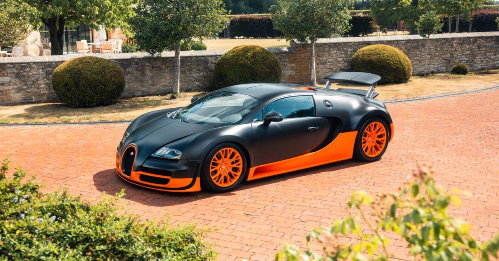
O Bugatti Veyron foi um dos carros mais revolucionários já produzidos
na história automotiva. Lançado em 2005, o modelo redefiniu completamente
o conceito de hipercarro ao alcançar níveis de desempenho e engenharia
considerados impossíveis para a época.
O Veyron também ficou marcado por ser o carro responsável por “reviver”
a Bugatti na era moderna. Após décadas sem grande relevância no mercado,
a marca voltou aos holofotes graças ao projeto extremamente ambicioso
desenvolvido pelo Grupo Volkswagen, transformando novamente a Bugatti
em referência máxima de luxo, velocidade e tecnologia.
Equipado com um gigantesco motor W16 quadriturbo, o Veyron ultrapassava
facilmente os 400 km/h, se tornando o carro de produção mais rápido
do mundo durante muitos anos. Sua potência absurda exigiu soluções
de engenharia extremamente avançadas, incluindo sistemas complexos
de refrigeração, aerodinâmica ativa e tração integral.
O desenvolvimento do Veyron foi tão extremo que diversos componentes
precisaram ser criados especialmente para suportar sua velocidade e força.
O carro utilizava materiais inspirados na indústria aeronáutica e tecnologias
que praticamente não existiam em veículos de produção naquele período.
Além de sua velocidade impressionante, o Bugatti Veyron também ficou conhecido por conseguir unir luxo e conforto com desempenho extremo, algo muito raro entre hipercarros. Seu impacto foi tão grande que mudou completamente a indústria automotiva, iniciando uma nova guerra pela velocidade máxima entre fabricantes de hipercarros.
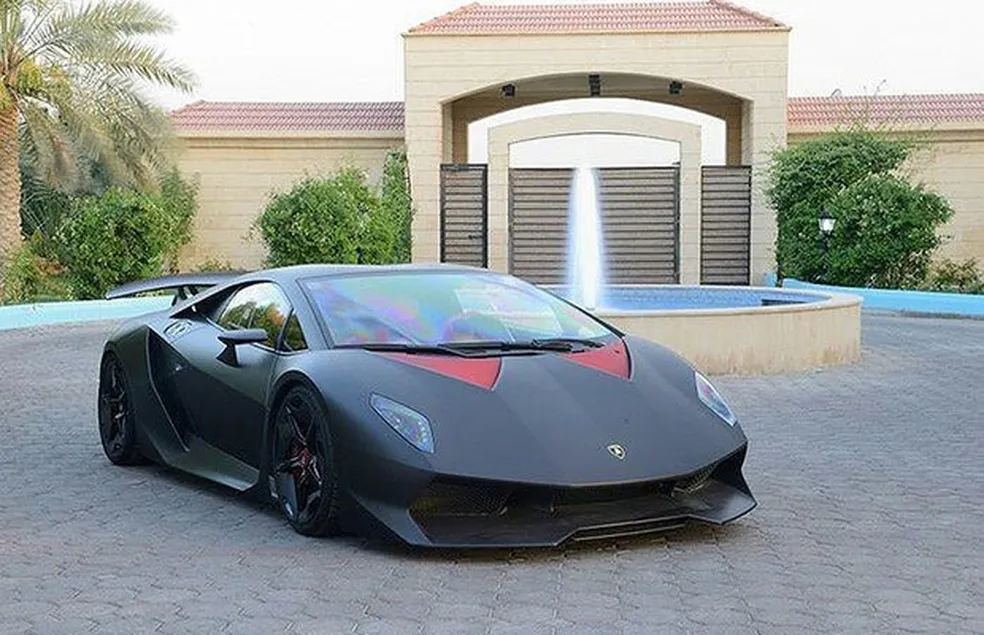
O Lamborghini Sesto Elemento é um dos carros mais extremos e futuristas
já criados pela Lamborghini. Apresentado em 2010, o modelo foi desenvolvido
com foco absoluto em leveza, desempenho e tecnologia.
Seu nome significa “sexto elemento”, uma referência direta ao carbono
na tabela periódica, já que praticamente toda a estrutura do carro foi
construída em fibra de carbono. O Sesto Elemento ajudou a mostrar ao
mundo o enorme potencial desse material na construção de supercarros
extremamente leves e resistentes.
Equipado com um motor V10 aspirado derivado do Lamborghini Gallardo, o carro entregava desempenho brutal graças ao seu baixíssimo peso. A combinação entre potência, tração integral e construção ultraleve permitia acelerações impressionantes e comportamento extremamente agressivo.
Seu design também chamava atenção por parecer praticamente um carro vindo do futuro, com linhas totalmente voltadas para aerodinâmica e refrigeração. O interior era minimalista e focado em reduzir peso, reforçando ainda mais sua proposta radical.
Até hoje, o Lamborghini Sesto Elemento é considerado um dos maiores símbolos da obsessão da Lamborghini por desempenho extremo e um dos carros mais insanos já produzidos pela marca italiana.
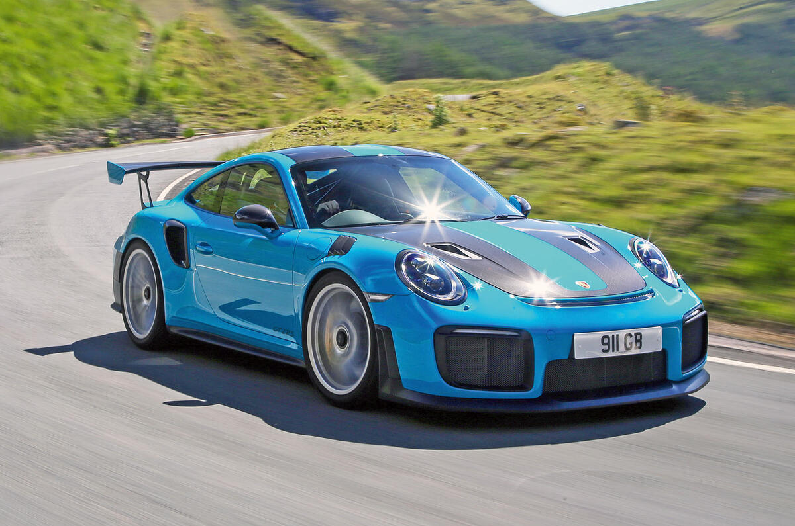
O Porsche 911 GT2 RS é considerado um dos carros mais extremos e rápidos já produzidos pela Porsche. Lançado em 2017, o modelo representava o limite máximo de desempenho da plataforma 911, combinando potência brutal, engenharia refinada e enorme eficiência em pistas.
Equipado com um motor seis cilindros biturbo montado na traseira,
o GT2 RS entregava desempenho impressionante, sendo capaz de competir
diretamente com hipercarros muito mais caros e exóticos. Sua aceleração,
velocidade final e comportamento em curvas fizeram o carro se tornar
referência entre esportivos modernos.
O modelo ganhou ainda mais fama após registrar tempos extremamente rápidos
em Nürburgring, um dos circuitos mais desafiadores do mundo. Durante anos,
o GT2 RS foi considerado um dos carros de produção mais rápidos da história
do circuito alemão, consolidando sua reputação como uma verdadeira máquina
de pista legalizada para as ruas.
Até hoje, o Porsche 911 GT2 RS é visto como um dos maiores exemplos da capacidade da Porsche em transformar um esportivo clássico em uma das máquinas mais eficientes e respeitadas do mundo automotivo.
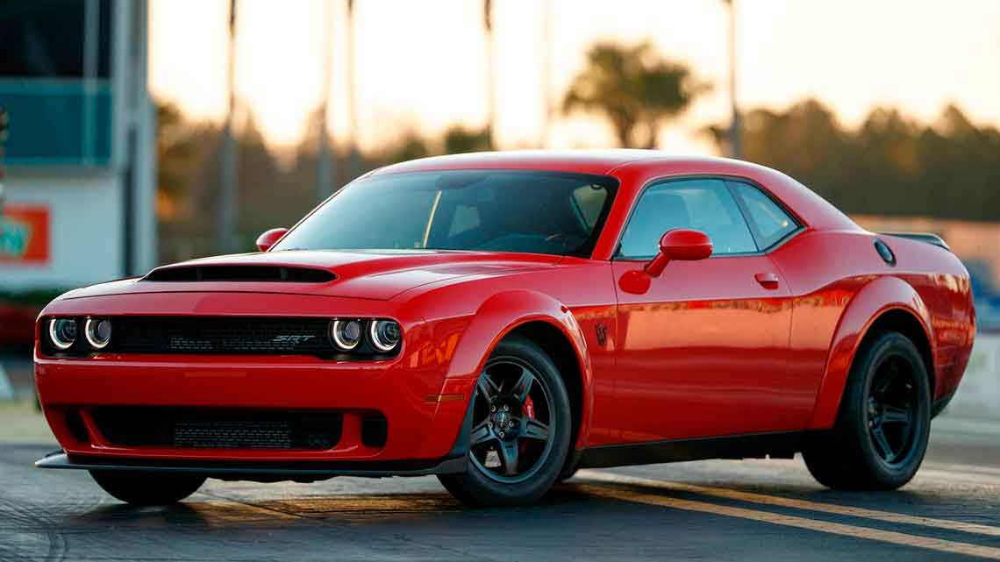
O Dodge Challenger SRT Demon foi criado com um único objetivo: ser um dos carros de arrancada mais extremos já produzidos para as ruas. Lançado em 2017, o modelo rapidamente ganhou fama por seu desempenho absurdo em linha reta e pela brutalidade de seu motor V8 supercharged.
Equipado com um gigantesco motor HEMI 6.2 litros com compressor,
o Demon entregava números impressionantes de potência e torque,
sendo capaz de realizar acelerações extremamente rápidas. O carro
foi desenvolvido praticamente como um dragster legalizado para uso urbano.
A Dodge realizou diversas modificações para focar totalmente em arrancadas,
incluindo suspensão preparada para transferência de peso, pneus específicos
para drag race e sistemas eletrônicos voltados para máxima tração.
O Demon ficou tão extremo que se tornou famoso por empinar as rodas
dianteiras durante acelerações fortes.
Diferente de muitos supercarros europeus focados em curvas e tecnologia,
o SRT Demon representava a clássica brutalidade dos muscle cars americanos:
muito motor, muito barulho e potência praticamente exagerada.
Até hoje, o Dodge Demon é considerado um dos muscle cars mais radicais já produzidos e um verdadeiro símbolo da cultura automotiva americana.
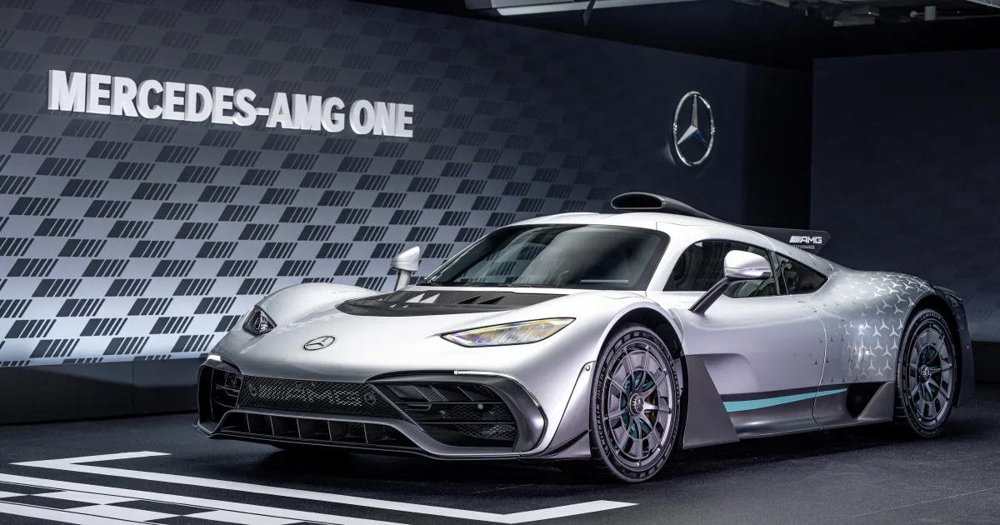
O Mercedes-AMG One é um dos carros mais avançados e impressionantes já produzidos para as ruas. Lançado oficialmente em 2022, o modelo ficou conhecido por trazer tecnologia diretamente da Fórmula 1 para um carro de produção em massa.
Equipado com um motor híbrido V6 turbo derivado dos carros de Fórmula 1
da Mercedes, o AMG One utiliza sistemas elétricos extremamente avançados,
recuperação de energia e aerodinâmica ativa para entregar níveis absurdos
de desempenho. Seu conjunto mecânico é considerado um dos mais complexos
já aplicados em um carro legalizado para uso nas ruas.
O desenvolvimento do AMG One foi extremamente difícil justamente por causa
da tentativa de adaptar um motor de Fórmula 1 para funcionar em um carro
de rua, respeitando regras de emissões, durabilidade e conforto.
Mesmo assim, a Mercedes conseguiu criar um veículo praticamente único
na indústria automotiva.
O AMG One também entrou para a história ao registrar um dos tempos mais
rápidos já feitos em Nürburgring, se tornando referência máxima em
desempenho entre carros de produção. Seu nível de aderência, aceleração
e eficiência aerodinâmica fazem o carro parecer mais um protótipo de corrida
do que um veículo comum.
Até hoje, o Mercedes-AMG One é considerado um dos maiores exemplos de
engenharia automotiva moderna e uma das máquinas mais extremas já criadas
pela Mercedes-Benz.
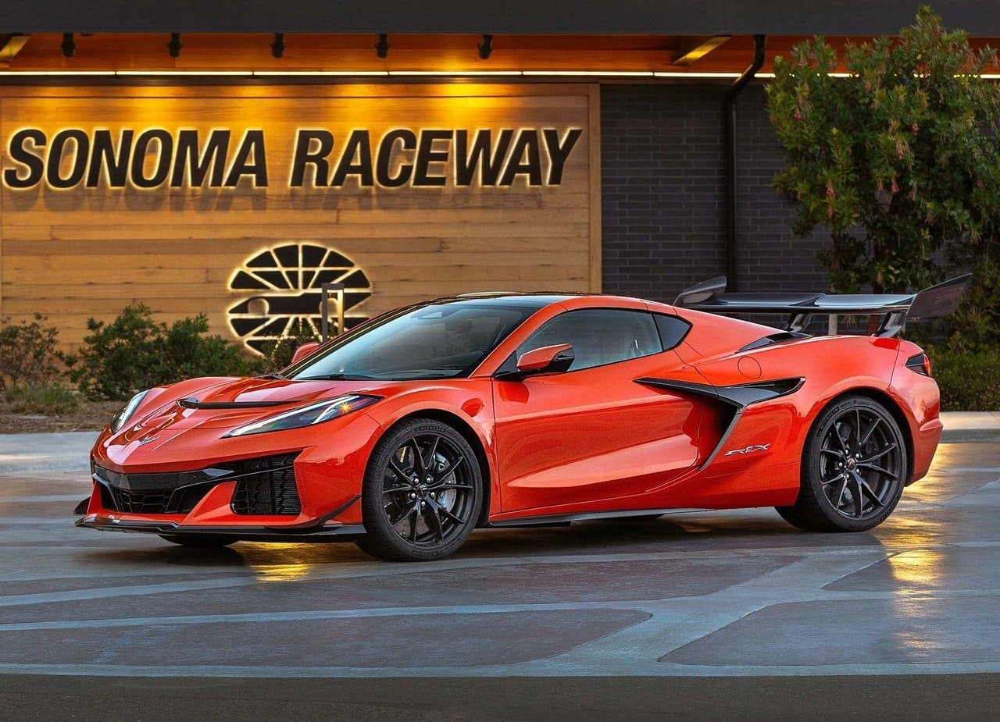
O Chevrolet Corvette ZR1X representa uma das maiores evoluções já vistas na história do Corvette. Lançado em 2025, o modelo chamou atenção por unir a tradição dos esportivos americanos com tecnologias modernas de desempenho, colocando o Corvette em um nível próximo aos hipercarros europeus.
Equipado com um poderoso motor V8 biturbo combinado com tecnologia híbrida,
o ZR1X entrega números impressionantes de potência e aceleração.
Seu conjunto mecânico foi desenvolvido para oferecer desempenho extremo
tanto em linha reta quanto em circuitos, transformando o Corvette em uma
verdadeira máquina de pista.
O modelo ganhou enorme destaque após registrar tempos extremamente rápidos
em Nürburgring, entrando para a lista dos carros de produção mais rápidos
da história do circuito alemão. Isso ajudou a consolidar ainda mais o
Corvette como um dos esportivos americanos mais respeitados do mundo.
Além do desempenho brutal, o ZR1X também impressiona pelo visual agressivo,
aerodinâmica avançada e grande evolução tecnológica quando comparado às
gerações antigas do Corvette. O carro mostrou que a Chevrolet conseguiu
elevar o Corvette a um novo patamar de performance.
Até hoje, o Corvette ZR1X é visto como um dos esportivos americanos mais extremos já produzidos e um forte símbolo da evolução moderna da engenharia automotiva da Chevrolet.